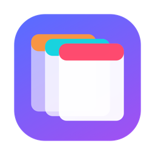

ClipdeckYour clipboard,
always at hand.
Press ⇧⌘V and a panel slides in from the edge of your screen with everything you copied: text, links, images, files and colors. Pick one and press Return.
Search finds words even inside screenshots. Pinboards keep what you paste every week. Paste Stack pastes several things in order.
It stays on your Mac. No account, no cloud, no analytics. Free to try, one purchase unlocks everything.